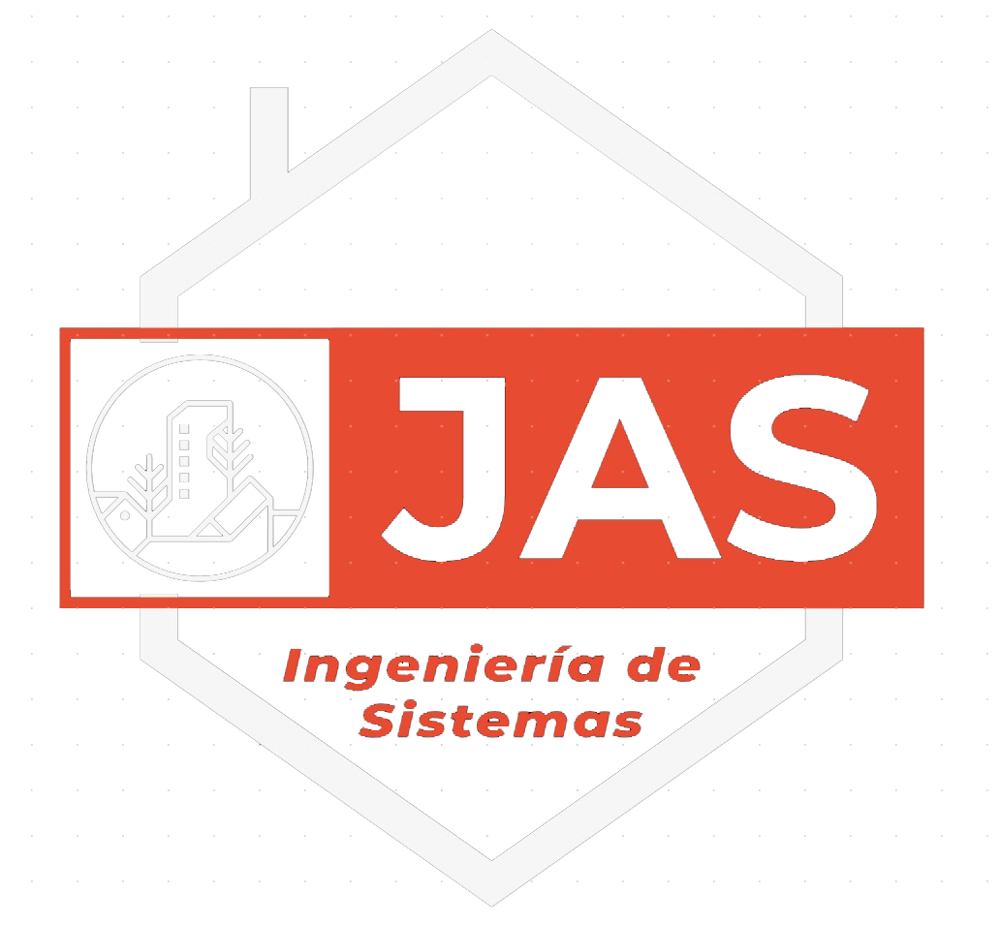

Nuestra Carrera

1Mision
El programa de pregrado de Ingeniería de Sistemas de la Unidad Central del Valle del Cauca forma profesionales con alta exigencia académica, con un compromiso como ciudadano en el contexto de su responsabilidad social, con la convicción de ser un eje articulador del progreso de la sociedad glocal, diseñando, creando y utilizando las tecnologías redes y telemática y el desarrollo de software. Además, desarrolla en el estudiante las habilidades para formular y liderar proyectos innovadores de desarrollo tecnológico para las empresas y el entorno, con una alta competitividad en los campos que involucran la Ingeniería de Sistemas, todo esto con responsabilidad social y ambiental.
2Vision
En el año 2030 el programa de pregrado de Ingeniería de Sistemas de la Unidad Central del Valle del Cauca, será reconocido por su trabajo para el desarrollo regional y nacional, por su alta calidad académica, su compromiso ético y ambiental con el entorno, utilizando como eje articulador el uso de las tecnologías telemáticas y el desarrollo de software en la solución de problemas de la sociedad glocal derivados de la investigación formativa y la proyección social
La programación orientada a objetos es un paradigma de programación basado en el concepto de "objetos", que pueden contener datos y código.
leer masMatematicas
La matemática es una ciencia formal que surgió del estudio de las figuras geométricas y la aritmética con números.
leer masFisica
La física es la ciencia natural que estudia la naturaleza de los componentes y fenómenos más fundamentales del Universo como lo son la energía, la materia, la fuerza, el movimiento, etc.
leer masIng Medio Ambiente
La ingeniería ambiental es la rama de la ingeniería que estudia los problemas del planeta de forma científica e integrada.
leer mas
Humanidades
Las humanidades son un conjunto de disciplinas académicas relacionadas con la cultura humana.
leer masTeoria general de sistemas
La teoría de sistemas o teoría general de sistemas es el estudio interdisciplinario de los sistemas en general.
leer masDe donde surge JAS?

JAS
JAS surge debido a una problematica muy comun la cual es la dificultad de algunos estudiantes a la hora de ver nuevos temas en nuevas asignaturas, entonces JAS estara dispuesto a ayudarles de una manera practica y efectiva.
Que podras encontrar?

Sistema de ingreso
El programa contara con un sistema de ingreso el cual mejorara la seguridad y el uso del mismo.

Calculadora
Podras encontrar una calculadora la cual te ayudara a resolver ejercicios sobre la derivada

Trivia
podras afianzar conocimientos sobre electromagnetismo y divertirte con tus amigos en una pequeña trivia
Ahorcado
Con las bases sobre el area de humanidades podras realizar un juego de ahorcado.